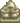
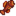

Bosque secreto
| Bosque secreto | |
 | |
| Cerrado: | Nunca |
| Residentes: |  Viejo maestro Cannoli |
El Bosque Secreto es un área a la que se puede acceder por la esquina noroeste del Bosque Tizón. La entrada está inicialmente cortada por un Tronco grande que puede ser talado después de mejorar tu hacha a Hacha de acero o mejor.
El Bosque Secreto contiene objetos de recolección estacionales y Babas que atacarán al jugador. Las babas tienen la posibilidad de soltar Semillas de caoba al matarlos.
El Bosque Secreto contiene seis Tocones Grandes que vuelven a crecer cada día y que se pueden recolectar para obtener un total de doce de Madera noble cada día. Cuatro tocones se encuentran en la parte superior del bosque, y dos se encuentran caminando a través de uno de los dos pasadizos cubiertos a una zona inferior más pequeña. Un pasadizo está entre los árboles, ligeramente al sureste del conjunto superior de tres tocones, y el otro está al sur de la entrada al bosque, aproximadamente 2-3 casillas a la derecha de un arbusto. El primer pasadizo es una línea recta, pero el segundo requiere que el jugador camine hacia el sur, luego hacia el oeste y de nuevo hacia el sur.
Sabiduría del Oso
Después de leer la Nota Secreta #23 se activará la misión "Nota extraña". Si entras en el Bosque Secreto con Jarabe de arce en el inventario entre las 06:00 y las 19:00 con esta misión activa, aparecerá una escena en la que el jugador se encuentra con un oso pardo que se lleva el jarabe de arce y le da las gracias compartiendo con él sus conocimientos especiales sobre bayas. Como resultado, se obtiene la Sabiduría del oso, que aumenta permanentemente el precio de venta de las Moras y las Frambuesas en un 3x.
Viejo maestro Cannoli
El Viejo maestro Cannoli es una estatua en el bosque secreto. Si interactúas con ella se verá la siguiente descripción:
| “ | “--Viejo maestro Cannoli--
Siempre en pos del sabor más dulce...” |
Si le das a la estatua una Baya de gema dulce, recibirás una Fruta estelar. Esto sólo ocurrirá una vez. En los juegos multijugador, solo se necesita una Baya de gema dulce, para que todos los jugadores reciban una Fruta estelar.
Tienda de Objetos Perdidos
Si un jugador ha desbloqueado un objeto único y luego lo ha perdido, una tienda secreta aparece al día siguiente detrás de la columna caída para volver a comprarlo. En la tienda se venden objetos que no se pueden volver a conseguir de ninguna otra forma. En multijugador, cualquier jugador puede comprar un objeto perdido (no sólo el jugador que perdió su objeto).
Todos los objetos se venden por  10 000o.
10 000o.
Los objetos que pueden aparecer son:
Recolección
Los objetos recolectables que se encuentran en el suelo del Bosque Secreto son:[1]
- En Primavera:
 Rábano silvestre (52%),
Rábano silvestre (52%),  Colmenilla (32%), y
Colmenilla (32%), y  Seta común (16%)
Seta común (16%) - En Verano:
 Helecho (78%), y
Helecho (78%), y  Seta roja (22%)
Seta roja (22%) - En Otoño: Seta común (46%),
 Chantarela (38%), y Seta roja (15%)
Chantarela (38%), y Seta roja (15%) - En Invierno:
 Acebo (100%)
Acebo (100%)
Los objetos recolectables aparecen a un ritmo medio de 0,8-1,4 por noche, dependiendo de la estación: 0,9 en Primavera, 1,0 en Verano, 0,8 en Otoño y 1,4 en Invierno.[2] El mapa muestra las posibles ubicaciones como fichas rojas.
Artefactos
No se pueden encontrar Artefactos al excavar en los Lugares de artefactos del Bosque Secreto. Los objetos posibles son:
- 1-3
 Arcilla (30-60%[3])
Arcilla (30-60%[3])  Libro perdido (20%); una vez encontrados todos los Libros Perdidos, cualquier Libro Perdido potencial se sustituye por
Libro perdido (20%); una vez encontrados todos los Libros Perdidos, cualquier Libro Perdido potencial se sustituye por  Semillas variadas.
Semillas variadas.- Solo en Invierno:
 Raíz invernal (24%)
Raíz invernal (24%) - Solo en Invierno:
 Ñame nival (16%)
Ñame nival (16%) - 1-3
 Piedra (10-20%[3])
Piedra (10-20%[3]) - Solo en Primavera: 2-5
 Brote de arroz (5%)
Brote de arroz (5%) - Una
 Nota secreta no descubierta: hasta un 5% de probabilidad, solo si el jugador tiene una Lupa.
Nota secreta no descubierta: hasta un 5% de probabilidad, solo si el jugador tiene una Lupa.
La mayor parte del año, sólo hay 8 casillas (cerca del estanque) donde son posibles los lugares de artefactos, por lo que son muy raros, con una tasa media de 0,01 por noche. En invierno, la tasa media aumenta a 0,7 por noche.[4]
Ruta de aldeanos
Ningún aldeano camina por el Bosque Secreto, así que los objetos pueden colocarse de manera segura en cualquier lugar.
Pesca
La pesca es posible en el estanque en la zona suroeste. Aquí se puede pescar un pez único, el Muyu. También se puede pescar la Carpa y Pez gato. Los peces disponibles son los mismos todo el año, aunque el Pez gato no suele estar disponible en verano.
| Hora | |||||||||||||||||||||
|---|---|---|---|---|---|---|---|---|---|---|---|---|---|---|---|---|---|---|---|---|---|
| Todas las estaciones | 06 | 07 | 08 | 09 | 10 | 11 | 12 | 13 | 14 | 15 | 16 | 17 | 18 | 19 | 20 | 21 | 22 | 23 | 00 | 01 | |
|  Muyu | |||||||||||||||||||||
| Sólo días lluviosos | |||||||||||||||||||||
Además de esto, la Maceta de pared es un artículo único que se puede obtener pescando aquí.
Errores
- Con la adición de la posibilidad de sentarse en sillas en 1.5, es posible entrar en el Bosque Secreto sin necesidad de mejorar el hacha a un Hacha de Acero. Colócate justo debajo del Tronco grande que bloquea el camino. A continuación, coloca una silla al otro lado del mismo. Con la silla en su lugar, es posible sentarse en ella, lo que permite al jugador saltar por encima del obstáculo que de otro modo sería insuperable después de ponerse de pie de nuevo. Se puede volver a salir del Bosque Secreto utilizando el mismo truco, colocando la silla en el lado del bosque del Tronco Grande. El jugador también puede usar un banco para entrar, pero no puede salir con uno.
Referencias
- ↑ Para cada artículo de recolección, el porcentaje proporcionado es el porcentaje medio de todos los artículos de recolección que serán el artículo especificado para esa estación. Los datos de entrada son Locations.xnb, el cual se procesa mediante código en GameLocation::spawnObjects.
- ↑ De las 1920 casillas del Bosque Secreto, 149 (8%) son lugares válidos para la aparición de objetos de recolección estándar. Para obtener más información sobre la aparición de objetos de recolección, consulta Recolección.
- ↑ 3,0 3,1 La probabilidad de encontrar objetos adicionales en los lugares con artefactos depende de la estación. La probabilidad máxima es en Verano y Otoño. En Invierno, la probabilidad es un 50% menor; en Primavera es un 6% menor. Véase Lugar de artefacto para más información.
- ↑ De las 1.920 casillas totales del Bosque Secreto, 8 (0,4%) son lugares válidos para la aparición de artefactos en Primavera, Verano y Otoño. 423 (22%) son lugares de aparición válidos en Invierno.
Historial
- 1.4: Las hojas que ondean en el Bosque Secreto en Otoño son ahora rojas/naranjas en lugar de verdes.
- 1.4.4: Se corrigió un error por el cual el ruido ambiental se repetía incorrectamente por la noche.
- 1.5: Cualquier monstruo en el Bosque Secreto ahora tiene un 10% de probabilidad de arrojar Semilla de caobas. La Maceta de pared se puede obtener pescando en el estanque.
- 1.6.9: Se agregó la Tienda de Objetos Perdidos.
- 1.6.10: Se solucionó un error en el que el juego crasheaba cuando la tienda de objetos perdidos vendía los objetos del evento de 14 corazones con Penny.
| Lugares | |
|---|---|
| Lugares | Bosque secreto • Bosque Tizón • Bosque trasero • Cantera • Caverna Calavera • Cementerio • Cloacas • Desierto de Calico • Estanque de la granja • Ferrocarril • Isla Jengibre • Granja • Mina de cantera • Minas • Montaña • Playa • Madriguera de bichos mutantes • Pantano de la Bruja • Parada de autobús • Pueblo Pelícano • Túnel • Vagoneta |